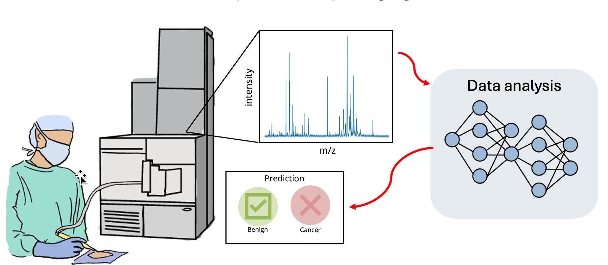

About
I’m a researcher in medical robotics and AI-driven surgical guidance, currently a Malone Postdoctoral Fellow at Johns Hopkins University, working with Dr. Russell H. Taylor and Dr. Axel Krieger. My research integrates imaging, robotics, and intelligent systems to advance precision cancer surgery. I completed my Ph.D. in July 2025 at Queen’s University in the Perk Lab and Med-i Lab, under the supervision of Dr. Gabor Fichtinger and Dr. Parvin Mousavi, with external mentorship from Dr. Taylor.
Research Highlights
Touching the Tumor Boundary – Haptic Feedback for Precision Surgery
A novel ultrasound-based haptic guidance system that helps surgeons detect and follow tumor margins through real-time haptic feedback.

SlicerROS2 – Bridging Medical Robotics and Image-Guided Surgery
An open-source framework connecting 3D Slicer and ROS 2 for real-time robotic control, visualization, and image-guided interventions.
AI Methods for Tissue Characterization
Developing AI and self-supervised learning approaches for differentiating healthy and cancerous tissues from imaging and mass spectrometry data.

Recorded Talks & Selected News
Recorded Talks
Invited presentation at the Hamlyn Symposium for Medical Robotics Workshop on Open-Source Software (2023).
Selected News
- Perk and Med-i Students showcase cutting edge research on the world stage
- Johns Hopkins Malone Center – New Cohort of Malone Postdoctoral Fellows Announced (2025)
- MediCREATE Feature – Touching the Tumor Boundary: Ultrasound-Based Haptic Guidance for Cancer Surgery (2025)
- Queen’s School of Computing – Passing the Torch to the Next Generation of Female-Identifying Researchers (2022)
Awards & Scholarships
Scholarships & Grants
-
Malone Postdoctoral Fellowship – Johns Hopkins Malone Center for Engineering in Healthcare (2025)
Competitive fellowship supporting postdoctoral researchers developing engineering solutions for clinical impact at Johns Hopkins.
-
NSERC Postdoctoral Fellowship (PDF) (2025)
Canada’s premier federal postdoctoral award, granted nationally to top researchers in natural sciences and engineering.
-
Vector Research Grant (2023–2025)
Research funding from the Vector Institute, Canada’s national institute for artificial intelligence research.
-
Queen’s University Tri-Agency Recipient Recognition Award (TARRA) (2022–2023)
Institutional award recognizing students who hold major federal Tri-Agency (NSERC/CIHR/SSHRC) scholarships.
-
Walter C. Sumner Memorial Fellowship and Renewal (2022–2023)
Prestigious fellowship awarded to doctoral students in electrical engineering, chemistry, and physics at select Canadian universities.
-
NSERC Canada Graduate Scholarship – Doctoral (CGS-D) (2022–2025)
Canada’s federal doctoral scholarship, awarded to the highest-ranked applicants nationwide.
-
MediCREATE Training Award (2021)
Award through an NSERC CREATE training program at Queen’s University in medical technology development and translation.
-
NSERC Alexander Graham Bell Canada Graduate Scholarship – Master’s (CGS-M) (2021–2022)
Canadian federal scholarship for master’s students in natural sciences and engineering.
-
NSERC Undergraduate Student Research Award (USRA) (2019 & 2020)
Competitive federal award funding full-time undergraduate research experience.
Research Awards
-
Governor General’s Academic Gold Medal (2026)
One of Canada’s highest academic honors, awarded to the top two graduate students with the most outstanding academic records at their university.
-
Best Application Award – Hamlyn Surgical Robotics Challenge (2025)
International surgical robotics competition held at the Hamlyn Symposium on Medical Robotics, Imperial College London.
-
Runner-Up Award – Siemens Healthineers Best Paper (for paper [J-5] at IPCAI) (2025)
Industry-sponsored best paper award at IPCAI, a leading international conference on computer-assisted interventions.
-
Runner-Up – IEEE Ph.D. Research Excellence Award – Kingston Section (2023)
IEEE regional award recognizing outstanding doctoral research across all IEEE fields.
-
Best Demo Award – Advances in Simplifying Medical UltraSound (ASMUS), MICCAI Workshop (2023)
Awarded at a workshop of MICCAI, the premier international conference in medical image computing.
-
Best Student Paper Award – IEEE International Conference on Autonomous Systems (ICAS) (2021)
Top student paper across all submissions to the conference.
-
First Place (Student’s Choice Award) – Electrical & Computer Engineering Capstone Demo Day (2020)
Top-ranked final-year engineering design project as voted by peers.
-
PEO Student Paper Competition Finalist (2019)
Provincial technical paper competition run by Professional Engineers Ontario.
Presentation Awards
-
Best Poster Award (Coauthor & Presenter of [A-4]) – iSMIT (2025)
International Society for Medical Innovation and Technology, an international conference on emerging medical technologies.
-
IPCAI ImFusion Long Abstract Audience Choice Award (2025)
Audience-voted award for the best long abstract presentation at IPCAI.
-
IPCAI J&J MedTech Best Presentation Audience Choice Award (2025)
Audience-voted award for the best conference presentation at IPCAI.
-
Best Presentation Award (Image-Guided Interventions & Surgery) – ImNO × IGT Symposium (2025)
Imaging Network Ontario, the annual symposium of Ontario’s medical imaging research community.
-
Best Presentation Award (Image-Guided Interventions) – Imaging Network of Ontario (ImNO) (2024)
Imaging Network Ontario, the annual symposium of Ontario’s medical imaging research community.
-
Runner-Up – Queen’s 3 Minute Thesis Competition (2021)
University-wide research communication competition: an entire thesis presented in three minutes to a general audience.
-
Best Pitch Award (Image-Guided Surgery) – Imaging Network of Ontario (ImNO) (2021)
Top-ranked rapid research pitch at Ontario’s annual medical imaging research symposium.
Reviewer Awards
-
Outstanding Reviewer Award – IPCAI (selected out of 147 reviewers) (2024)
Recognition for exceptional peer-review quality at a leading computer-assisted interventions conference.
-
Outstanding Reviewer Award – MICCAI (selected out of 1659 reviewers) (2023)
Recognition for exceptional peer-review quality at the premier international medical image computing conference.
Travel Grants
-
IPCAI Student Participation Award (2025)
Competitive award supporting student attendance and participation at IPCAI.
-
NSERC Michael Smith Foreign Study Supplement (MS-FSS) (2023)
Federal supplement supporting NSERC scholarship holders undertaking research abroad at leading international institutions.
-
SPIE Medical Imaging – Travel Bursary (2020 & 2022 – deferred)
Travel support for presenting at SPIE Medical Imaging, a major international medical imaging conference.
-
Mitacs Globalink Research Award (2020 – deferred to 2021)
National award funding international research collaborations between Canadian and foreign institutions.
Curriculum Vitae
You can download my full CV below:
Contact
You can reach me at either of the following email addresses: